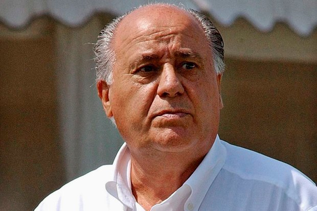

Познакомимся поближе
Зара — ведущая торговая сеть группы компаний Inditex Group, принадлежит Испанскому магнату Амансио Ортега (Amancio Ortega), который также является владельцем таких брендов как Massimo Dutti, Pull and Bear, Oysho, Uterque, Stradivarius и Bershka. Утверждается, что Zara требуется всего 2 недели от разработки дизайна до поступления новой линии в продажу, по сравнению со средним показателем в индустрии- 6 месяцев. Более того, в течение года разрабатывается более 10 000 новых дизайнов. Zara смогла устоять перед распространённым в индустрии производства одежды трендом размещения производственных точек в странах, с низкой стоимостью производства.
Модный директор дома моды Louis Vuitton Даниэль Пьет описал Zara, как «Возможно, наиболее инновационную и сокрушающую розничную сеть в мире». Также Zara была охарактеризована CNN как «Испанская история успеха».
История появления бренда
Создание торговой марки
Основатель компании Zara, Амансио Ортега, открыл первый магазин Zara в 1975 году. Сначала Ортега хотел назвать компанию Zorba в честь персонажа, сыгранного его любимым актером Энтони Куинном в фильме «Грек Зорба». Однако получить права на использование имени персонажа не удалось[4]. Используя уже имеющиеся формы для литья букв, было создано новое название — Зара, испанское произношение еврейского имени Сара.
Первый магазин находился на центральной улице в Ла-Корунья. В первом магазине были представлены модели-двойники известных модных домов по низким ценам. Магазин доказал успешность компании, и Ортега начал открывать новые магазины Zara по всей Испании.
В начале 80-х Ортега начал разрабатывать новую модель процесса дизайна и распространения товаров. Швейная промышленность обычно использовала схему производства, при которой требовалось практически 6 месяцев от изначального дизайна до поступления в продажу предметов одежды. Эта схема значительно ограничивала производителей и дистрибьюторов до 2—3 коллекций в год. Попытка предугадать вкусы и предпочтения потребителей влекла за собой присущие этому сложности, так как и производители и дистрибьюторы постоянно рисковали остаться с нераспроданным товаром.
Международная сеть
В 1979 году Амансио объединил все свои компании под флагом Inditex. В 80-х он заполонил своими магазинами все уголки Испании, и ещё до конца десятилетия его охватила отважная и безрассудная идея — завоевать модные столицы мира, открыться в Париже и пересечь Атлантику, чтобы покорить Нью-Йорк.

«Когда я прибыл в Париж в 1990 году, вскоре после открытия нашего первого магазина, рядом с Place de l’Opéra, я стремительно бросился туда, чтобы
увидеть всё своими глазами, — рассказывал Ортега. — Когда я попытался войти в тот первый магазин во французской столице, я не смог пробиться сквозь очередь людей, толпящихся даже на улице. Я стоял там, в дверном проходе, рыдая, как ребёнок. Я не мог сдержать чувств».
Компания с самого начала сделала ставку на быструю моду и повторение моделей известных дизайнеров в более доступных материалах. В офисе Inditex был специальный отдел, сотрудники которого изучали модные журналы, а также препарировали платья из последних коллекций, чтобы заимствовать их крой для своих моделей.
Бизнес-модель
Первый шаг в процессе создания новой коллекции — определение трендов. Сотрудники компании путешествуют по всему миру, смотрят, что носят люди и как одеты покупатели на улице. Их наблюдения могут превратиться в эскизы, которые потом показывают на внутренних собраниях. Дизайнеры смотрят на доминирующие цвета и материалы, а затем подробно изучают конкретные элементы. Кроме того, они черпают информацию из модных журналов, просмотров коллекций на подиумах, ТВ-шоу или нарядов звёзд с красных ковровых дорожек и так далее. Магазины марки также сообщают о том, что сейчас пользуется спросом.
Со всей этой информацией на руках дизайнеры создают прототипы линий (более 22 тысяч вещей в год). Прототипы тестируют на реальных людях и манекенах. Вещи, прошедшие тест, отдаются снова в руки модельеров-художников, которые создают выкройки. Фрагменты выкройки размещают на ткани подобно пазлу, стремясь найти наиболее выгодный вариант использования материала.
«У нас есть возможность полностью отказаться от какой-то линии, если она не продаётся, мы можем наполнить коллекции новыми цветами и создать новый стиль всего за несколько дней», — говорил Ортега.
«Он не позволил ничему изменить себя, — говорит менеджер его первого магазина в Мадриде Елена Перес. — Компания всё растёт и растёт, но он носит те же ботинки, рубашки и брюки. Я знаю, что он хотел бы чаще носить вещи Zara, но иногда его ужасно раздражает наш мужской отдел, потому что у них нет штанов его размера».